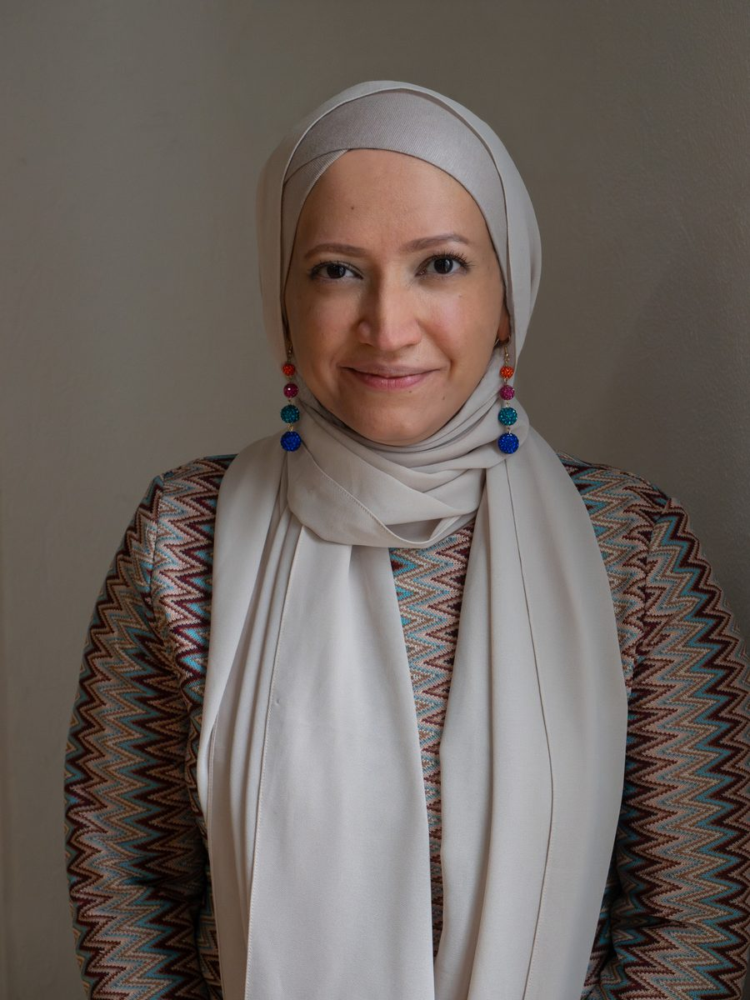
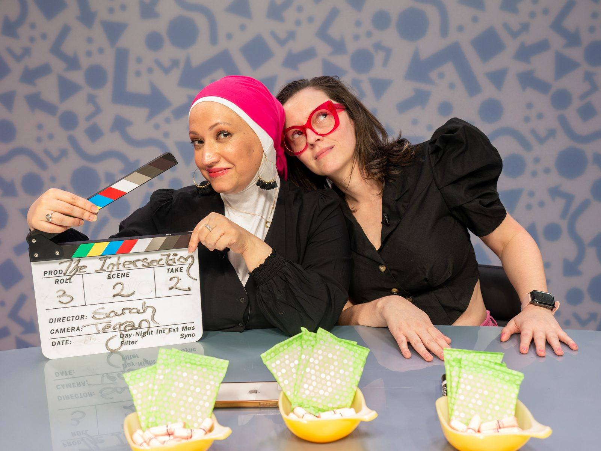

Shazma Gaffoor

See her workA panel talk show that looks at everyday issues through an unapologetically intersectional lens. Two hosts who grew up in different worlds sit down with people whose stories don't usually get on television.

A panel talk show that looks at everyday issues through an unapologetically intersectional lens. Two hosts who grew up in different worlds sit down with people whose stories don't usually get on television, and pull complicated subjects apart with humour rather than jargon. Jess and Shaz have very different backgrounds and upbringings, and a strong friendship built on deep conversations about big ideas.
The pilot is a periods episode where the two hosts, a hijabi journalist and a bogan weirdo, a trans non-binary health promotion officer and a culturally aware period educator all talk about their own periods on free-to-air television.
Made by three Melbourne women, for community television, streaming, and social.
A kind and tolerant society that shares compassion with people from all walks of life.
To create community television that reaches the hearts and minds of everyday people, breaks down ignorance, and fosters everyday kindness.
Episodes are on their way.
The Intersection is made on a shoestring, by and for people who don't often see their lives on TV. We're raising $10,000 through the Australian Cultural Fund to finish and release Pilot Season.
Pilot Season is four episodes. Three are shot and in post-production: the pilot, on periods, plus Rude of You, on cultural rudeness, and Sport, Identity and Community. The fourth, in pre-production now, introduces the show itself, with guests talking about intersectionality and what it means to them. Once finished, the episodes go to air on C31 Melbourne and Geelong, C44 Adelaide and the CTV+ streaming app.
Most Australian TV is made by and about a narrow slice of the country. Community television is one of the few places where that changes, because the people on screen and behind the camera can come from the communities the stories are about. The Intersection brings in guests who speak from their own lives and expertise, and a crew that includes people starting out in media.
Donations go towards finishing and releasing Pilot Season: editing, motion graphics, captions, preparing the episodes for broadcast, and getting the word out once they air. We want to pay people from the communities the show is made for, so the money also goes towards paid work for crew, guests and people starting out in media.
Donations go through the Australian Cultural Fund, which is run by Creative Australia. It takes no fees, and donations over $2 are tax deductible. The campaign closes on 20 December.
Guest suggestions, story ideas, crewing, or anything else. You can also email us at the.intersection.show.australia@gmail.com.
Thanks. We'll get back to you.